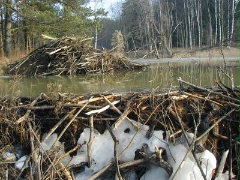
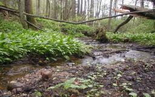
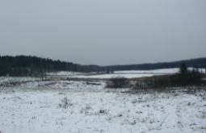
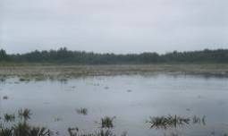

Ключевая водно-болотная территория
В 2003 году восточная часть Красного леса была признана ключевой водно-болотной территорией, имеющей важное значение для сохранения биологического разнообразия и природного равновесия в районе трансграничного природного комплекса между Литвой и Калининградской областью.




Литература. Important transboundary Belarusian-Lithuanian and Lithuanian-Russian wetlands. — Vilnius, 2003.
Формулировка о статусе территории перенесена из прежней версии сайта; актуальность статуса и границ следует проверить перед окончательной публикацией.